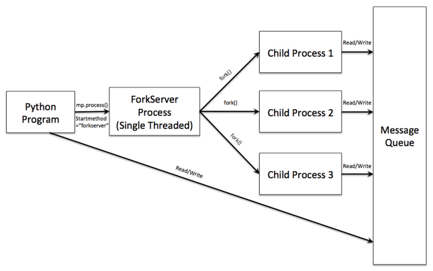

from multiprocess import Process, Pipe
def parentData(parent):
# Il processo p1 invia un dato attraverso il lato 'parent' della pipe
parent.send(['Hello'])
parent.close()
def childData(child):
# Il processo p2 invia un dato attraverso il lato 'child' della pipe
child.send(['Bye'])
child.close()
if __name__ == '__main__':
# Pipe() restituisce due estremità di una connessione bidirezionale
parent_conn, child_conn = Pipe()
# Creiamo il primo processo passandogli la prima estremità
p1 = Process(target=parentData, args=(parent_conn,))
p1.start()
# Creiamo il secondo processo passandogli la seconda estremità
p2 = Process(target=childData, args=(child_conn,))
p2.start()
# Il processo principale riceve i dati inviati dai figli
# Nota: parent_conn riceverà quello che viene inviato su child_conn e viceversa
print(parent_conn.recv()) # Riceve quello che ha inviato p2 (childData)
print(child_conn.recv()) # Riceve quello che ha inviato p1 (parentData)
p1.join()
p2.join()9 Programmazione concorrente in python (2)
9.1 Modulo multiprocessing
Il modulo multiprocessing supporta lo spawning di processi attraverso una API simile a quella messa a disposizione dal modulo threading.
Supera il limite del threading dovuto al GIL, attraverso l’utilizzo di processi multipli:
- permette la creazione di più Python interpreter processes
- ogni processo avrà il proprio GIL, evitando i problemi del modulo
threading. - permette al programmatore di sfruttare totalmente le architetture multicore.
È consigliabile utilizzare questo modulo quando: - si hanno a disposizione core multipli - i task da eseguire sono principalmente CPU bound
A seconda della piattaforma, il modulo multiprocessing supporta tre modi per avviare un processo attraverso il set di start_method.
Per settare lo start_method è possibile utilizzare il metodo set_start_method(string) messa a disposizione nel modulo multiprocessing, passando una stringa con il modo di avvio
- es.
mp.set_start_method("spawn")
Il metodo set_start_method non può essere usato più di una volta in una running, ed è necessario ottenere il contesto esecutivo tramite il metodo get_context()
- es.
ctx = get_context('spawn')
Cosa è un context?
Un Context è un oggetto che espone la stessa interfaccia (API) del modulo multiprocessing, ma è vincolata a uno specifico metodo di avvio.
Quindi questo contesto mi permette di far coesistere diversi metodi di avvio all’interno dello stesso programma.
Il limite che risolve è che se utilizzo il metodo multiprocessing.set_start_method(), sto impostando una regola valida per l’intera applicazione (globale). Questo comando ha una limitazione ferrea: non può essere utilizzato più di una volta in un programma in esecuzione. SE provassi a chiamarlo due volte per impostare prima spawn e poi fork, Python solleverebbe un RuntimeError.
I metodi di avvio sono spawn, fork e forkserver.
Di questi metodi non tutti sono disponibili tra i diversi sistemi operativi, infatti:
- spawn è disponibile su Unix, Windows e MacOS
- default per Windows e MacOS
Gli altri due metodi non sono disponibili per Windows e MacOS.
- fork e forkserver sono disponibili in Linux
- di default per Linix era fork, adesso con l’introduzione di forkserver è questo il metodo di start predefinito
Alla creazione di un processo figlio, il processo padre:
- avvia un nuovo Python Interpreter Process per ogni processo figlio
- Importa di nuovo il modulo principale dopo aver creato il processo figlio
9.2 spawn
Il processo figlio eredita solo le risorse necessarie ad eseguire il metodo run(), escludendo informazioni non necessarie.
spawn invia al processo figlio solo ciò che è esplicitamente necessario tramite un meccanismo di serializzazione di oggetti in Python chiamato pickling.
- Vengono serializzati al figlio argomenti (
args,kwargs), l’oggetto funzione target del processo (per riferimento, poi importato), oggetti condivisi eplicitamente (Queue, Pipe, etc) - Non vengono serializzati al figlio variabili globali, lo stato corrente della memoria, file aperti.
spawn è il metodo più lento dei tre disponibili, ma quello che è utilizzabile in ogni OS.
Problema della non portabilità:
Tale problema nella programmazione multi-processo in Python deriva dal fatto che i diversi sistemi operativi gestiscono la creazione dei processi in modi profondamente differenti. Se scrivi il codice pensando solo a come funzione su Linux, è molto probabile che lo stesso codice crash o si comporti in modo anomalo su Windows e MacOS.
I tre problemi principale che causano la non portabilità sono:
Disponibilità dei metodi di avvio:
Il limite più evidente è che non tutti i metodi di avvio sono disponibili ovunque:
forkè disponibili esclusivamente su sistemi Unix. Se provi a forzare l’uso diforksu Windows, riceverai un errore perché il sistema operativo non supporta nativamente questa chiamata di sistema.spawn: è l’unico metodo supportato da tutte le piattaforme ed è quello predefinito per Windows e MacOS.forkserver: è limitato ai sistemi Unix che supportano il passaggio di file descriptor attraverso le pipe.
La clausola
if __name__ == "__main__":Questa è la trappola più subdola.
- Con il metodo
spawn, il processo figlio avvia un nuovo interprete e re-importa il modulo principale. Se non proteggi la crezione del processo con il bloccoif __name__ == "__main__", il figlio proverà a creare a sua volta un nuovo processi in un ciclo infinito di “spawn”, portando al crash del programma. - Con il metodo
fork, questo blocco non è strettamente necessario perché il figlio eredita lo stato della memoria del padre senza dover re-importare il modulo.
Quindi a seconda della presenza di questa clausola potrebbe succedere che alcuni programmi funzioneranno per Linux ma non per Windows o MacOS.
- Con il metodo
Variabili globali:
Il modo in cui i dati vengono passati tra i processi cambia radicalmente la portabilità del codice:
Con
forkil processo eredita tutte le risorse e l’intera immagine della memoria del padre (copy-on-write). Le variabili globali definite nel padre prima dellaforksono visibili nel figlio.Invece con
spawnil figlio parte da zero e riceve solo gli argomenti passati esplicitamente tramite la serializzazione (pickling). Non eredita le variabili globali impostate nel modulo principale.
Quindi dal momento che il processo figlio re-importa di nuovo il modulo principale è necessario che il processo padre invochi il costruttore di Process all’interno di un blocco if __name__ == "__main__"
SBAGLIATO:
import multiprocessing
from multiprocessing import Process
print(f'__name__: {__name__}')
def run_function(x):
print("x =", x)
multiprocessing.set_start_method("spawn")
p = Process(target=run_function, args=(10,))
p.start()
p.join()File "~/multiprocessing/context.py", line 243, in
set_start_method
raise RuntimeError('context has already been set')
RuntimeError: context has already been setil modo corretto sarebbe:
import multiprocessing
from multiprocessing import Process
print(f'__name__: {__name__}')
def run_function(x):
print("x =", x)
if __name__ = "__main__":
multiprocessing.set_start_method("spawn")
p = Process(target=run_function, args=(10,))
p.start()
p.join()__name__: __main__
__name__: __mp_main__
x = 109.3 fork
fork (disponibile solo su Unix, dove è il metodo di default fino a Python 3.13)
Il processo padre utilizza la system call fork() (tramite os.fork()) per avviare un nuovo Python Interpreter process senza re-importare il modulo principale.
Il processo figlio eredita le risorse del padre (file descriptor, socket, lock, etc.), ma NON i thread → viene creato con un solo thread, quello che ha chiamato la fork().
- La memoria è soggetta a copy-on-write: padre e figlio condividono le stesse pagine fisiche finché uno dei due non le modifica, solo a quel momento avviene la copia.
In questo caso la fork() è considerata unsafe perché i thread e le risorse nel processo padre potrebbero non funzionare bene nel processo figlio.
Potrebbe presentarsi un deadlock perché lo stato dei vari lock è lo stesso del padre, quindi se un lock era acquisito nel padre resterà acquisito anche nel figlio.
Il problema nasce dal fatto che la primitiva
fork, come dice il manuale:The child process is created with a single thread—the one that called
fork().Significa che nel momento in cui vado a creare un nuovo processo, che possiede diversi thread, il nuovo processo (figlio) avrà un unico thread che consiste nel thread che ha chiamato la
fork.Adesso il problema di presenta quando i thread presenti nel processo si sincronizzano tramite lock, semafori, variabili condition, etc definite all’interno del modulo
threading. Infatti le chiamate fatte su tali costrutti nel padre non si rifletteranno più nel figlio dopo la creazione; inoltre lo stato di questi costrutti sarà pari allo stato di questi ultimi al momento dellafork, quindi potremmo avere comportamenti indesiderati tra cui DEADLOCK
Dal momento che il processo figlio NON re-importa di nuovo il modulo principale NON è strettamente necessario che il processo padre invochi il costruttore di Process all’interno di un blocco if __name__ == "__main__":
import multiprocessing
from multiprocessing import Process
print(f'process id: {os.getpid()} | __name__: {__name__}')
def run_function(x):
print("x =", x)
multiprocessing.set_start_method("fork")
p = Process(target=run_function, args=(10,))
p.start()
p.join()
# o in modo equivalente:
# if __name__ = "__main__":
# multiprocessing.set_start_method("fork")
# p = Process(target=run_function, args=(10,))
# p.start()
# p.join()process id: 2934 | __name__: __main__
x = 109.4 forkserver
forkserver (disponibile sui sistemi Unix che supportano il passaggio di file descriptor attraverso Unix pipe. Default da Python 3.14 in poi). È un cambiamento fondamentale per rendere il multiprocessing più robusto, sicuro e prevedibile.
viene creato un server process;
Invece di far generare i figli direttamente dal processo principale, Python avvia un processo speciale chiamato Fork Server.
- Viene istanziato la prima volta che invochi una funzionalità di
multiprocessing
- Viene istanziato la prima volta che invochi una funzionalità di
quando un nuovo processo è necessario, il processo padre si connette al server richiede ad esso la fork di un nuovo processo;
- La richiesta avviene tramite un mesasggio attraverso una pipe Unix.
- Il Fork Server riceve la richiesta e lui, internamente, esegue la
fork()per creare il niovo processo figlio. - Una volta creato, il figlio “eredita” dal server, non dal padre, e poi riceve dal padre i file descriptor (tramite pipe) necessari per la comunicazione.
le risorse non necessarie non sono ereditate;
Questo è un vantaggio principale in termini di efficienza e pulizia.
- Il problema della
forkclassica: il figlio eredita tutto lo stazio di memoria del padre. Se il tuo programma ha caricato2GBdi dati in RAM, anche il figlio inizierà con2GBoccupati (anche se si utilizzano meccanismi di copy-on-write). - La soluzione implementata da
forkserversta nel fatto che il processo figlio non possiede tutte le variabili, le connessioni ai database o i gradi dataset caricati dal processo principale dopo l’avvio. - i risultati sono che i figli sono più snelli e isolati.
- Il problema della
il server process è single threaded, pertanto l’utilizzo della fork è safe;
Quando un processo chiama la
fork(), il sistema operativo crea una copia esatta di quel processo. Tuttavia, c’è un’eccezione fondamentale: solo il thread che ha chiamato laforkviene clonato nel nuovo processo. Tutti gli altri thread non esistono nel processo figlio.Perché questo rompe tutto? (Il caso dei Lock)
Immagina questa situazione nel processo principale (Multi-threaded):
Thread A acquisisce un Lock (un lucchetto) su una risorsa (es. il modulo logging o una connessione a un database).
Thread B chiama fork().
Nel processo Figlio appena nato:
Il Thread B esiste ancora.
Il Thread A è scomparso, perché non è stato lui a chiamare la fork.
Il Lock è ancora lì ed è “CHIUSO”, perché è parte della memoria copiata.
A questo punto, il processo figlio è in un Deadlock (vicolo cieco): ha bisogno del lucchetto per scrivere un log, ma il lucchetto è bloccato da un thread che non esiste più e che non potrà mai liberarlo. Il programma si congela.
La soluzione proposta con il
forkserver.Con
forkserverviene creato un nuovo processo tramite la modalità dispawn→ il server inizia la sua vita con una memoria completamente pulita e, soprattutto, con un solo thread.Il Fork Server funge da template (stampino) pulito: esso rimane attivo in background per tutta la durata dell’esecuzione del programma, in attesa di istruzioni dal processo padre.
Quando viene richiesta la creazione di un nuovo processo, il Fork Server non esegue una copia del “padre” nel suo stato attuale, bensì crea una copia di se stesso tramite la funzione fork().
Essendo il Fork Server la versione “congelata” (ovvero lo stato iniziale del programma subito dopo il caricamento dei moduli), esso rappresenta un ambiente di esecuzione puro e, soprattutto, single-threaded. Poiché nel server non sono ancora stati istanziati i thread secondari o i meccanismi di sincronizzazione complessi del processo principale, i nuovi processi figli nascono in uno stato deterministico e sicuro. Questo approccio elimina alla radice il rischio di Deadlock, impedendo ai figli di ereditare “lock fantasma” bloccati da thread che non esistono più.
Viene garantita l’assenza di Deadlock che poteva presentarsi con l’utilizzo di una
forkdal processo padre.

9.5 Modulo multiprocess
multiprocess è un fork del modulo multiprocessing.
Estende multiprocessing per fornire un meccanismo di serializzazione migliorata, utilizzando dll.
multiprocess sfrutta il modulo multiprocessing per supportare lo spawning dei processi utilizzando API del modulo threading della libreria standard di Python.
- Quindi
multiprocessconsente di gestire processi come se fossero thread. - Tale modulo assottigli ancora di più le differenze che vi sono tra il modulo
threadingemultiprocessing, uniformando l’interfaccia dithreading
Permette il trasferimento di oggetti tra processi tramite pipe o code multi-produttore/multi_consumatore.
Permette la condivisione di oggetti tra processi utilizzando un processo server (ambiente locale) o shared memory (ambiente globale).
9.5.1 Process class
Un oggetto della classe Process rappresenta una attività da eseguire in un processo separato.
La classe Process possiede metodi equivalenti a quelli della classe threading.Thread
Porcess(group=None, target=None, name=None, args=(), kwargs={}, *, daemon=None)start(): avvia il processo, portando all’esecuzione del metodorunnon appena il processo sarà schedulatorun(): metodo che contiene il corpo del processo, e che ne rappresenta il comportamentojoin(timeout=None): metodo bloccante, che attende fino alla terminazione (naturale o con eccezioni) del processois_alive()metodo che ritorna se il processo è alive o meno
Come per la classe Thread, anche la classe Process permette la creazione di un processo in vai modi, usando callable object o estendendo la classe Process stessa e eseguendo l’override del metodo run().
9.5.2 Sincronizzazione tra processi
I moduli multiprocess e multiprocessing contengono primitive di sincronizzazione equivalenti a quelle fornite nel modulo threading.
Pertanto anche con i processi è possibile utilizzare Lock, RLock, Semaphore, Condition ed Event.
Ovviamente devono essere utilizzati i
Lock,RLock, etc, che sono definiti nel modulomultiprocessingomultiprocesspoiché sono implementati in modo da esser allocati in una memoria condivisa tra i processi.Questo significa che non posso utilizzare per un’applicazione multi processo i costrutti di sincronizzazione offerti dal modulo
threadingpoiché questi sono pensati per esser utilizzati da thread che lavorano sullo stesso spazio di indirizzamento.In definitiva, i costrutti di
multiprocessing/multiprocesse quelli dithreading, sono gli stessi oggetti visti dall’esterno, attraverso le API e il loro comportamento, ma sotto sono implementati in modo differente.
9.5.3 Scambio di oggetti tra processi
Quando sono utilizzati processi multipli, è spesso necessario prevedere dei canali di comunicazione tra gli stessi che permettano di evitare l’uso di primitive di sincronizzazione.
Passiamo da un modello di memoria condivisa a un modello di scambio di messaggi.
I moduli multiprocess e multiprocessing supportano due canali di comunicazione tra processi:
- Pipe, che consente la connessione fra più processi
- Queue, che supporta (di fatto implementa) il problema produttori-consumatori multipli
Una Pipe è caratterizzata da una coppia di Connection objcets che rappresentano gli endpoint della pipe.
Una Queue è un process shared queue, implementata attraverso una pipe e lock/semaphores.
Sia Pipe che Queue sono thread/process-safe
9.5.3.1 Pipe
La funzione Pipe(duplex=True) messa a disposizione da multiprocessing e multiprocess ritorna una coppia di oggetti Connection (conn1, conn2), interconnessi attraverso una pipe.
duplex:- Se pari a
True(default) la pipe creata è bidirezionale (duplex) - se pari a
False, la pipe sarà unidirezionale:conn1può solo ricevere messaggiconn2può solo inviare messaggi
- Se pari a
I due oggetti Connection rappresentano i due endpoint della pipe, sui quali è possibile utilizzare i seguenti metodi:
send(obj): per inviare un oggetto verso l’altro endpoint della connessione, dove sarà utulizzata unarecv()recv(): ritorna un oggetto inviato dall’altro endpoint della connessione. Se non vi sono ancora oggetti da ricevere, il metodo è bloccante.
NOTA: - È importante notare che i dati nella pipe possono essere corretti se due processi utilizzano lo stesso endpoint per leggere o scrivere dati - Nessun rischio invece nel caso di processi che utilizzano endpoint diversi di una pipe.